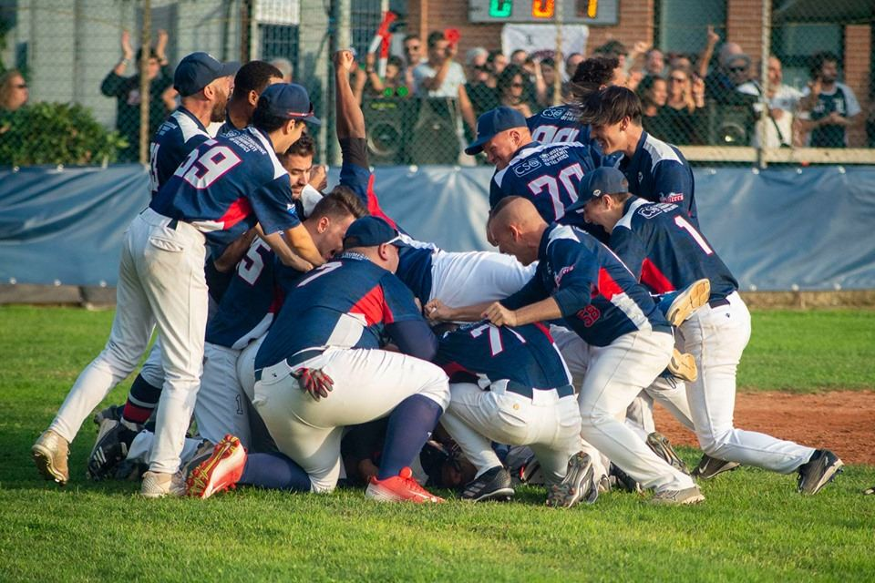
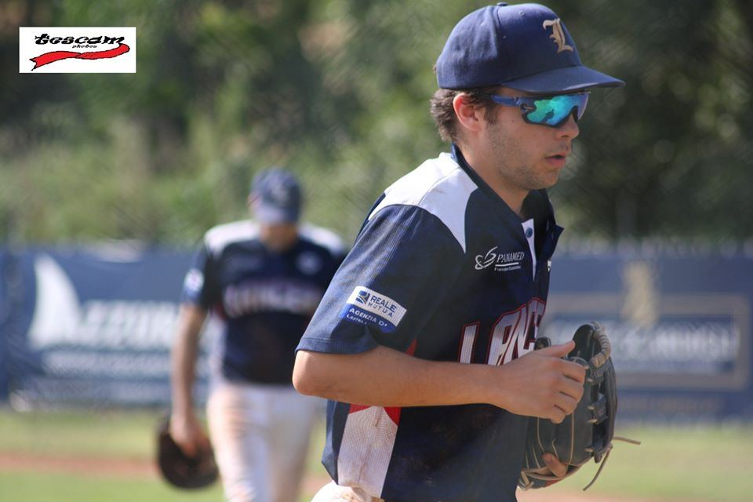

Invece siamo tornati, il baseball è tornato in campo e finalmente anche i più piccoli possono allenarsi e addirittura giocare un campionato regolare come è andato di scena domenica scorsa con gli Under 12.
Il Baseball è tornato si, ma non senza difficoltà.
Il Consiglio Federale ha emesso un protocollo per le gare che di certo non sarà di facile attuazione ma che sembra l’unica strada possibile per tornare sul diamante con gare ufficiali; il protocollo è scaricabile cliccando qui.
Parlando di noi: la società è riuscita a schierare le quattro categorie scese in campo nella passata stagione; solamente l’under 12 sarà formata in collaborazione con il Padule di Sesto Fiorentino mentre Under 15, Serie C e Serie A2 saranno composte dai nostri atleti.
La Serie A2, com’è logico che sia, subirà un calo di partite con l’Opening Day previsto per il prossimo 11 Luglio; una stagione corta ed intensa, con poche partite di preparazione e nella quale non è prevista la retrocessione.
Proprio per questi motivi il consiglio societario, in accordo con lo staff tecnico, ha deciso di affidarsi quasi totalmente al proprio organico rinunciando ad alcuni atleti annunciati lo scorso inverno: Gonzalez e Colasante non faranno parte del nostro team.

Infatti, alcuni di loro hanno già fatto parte del roster sceso in campo lo scorso sabato nel test amichevole contro la Fiorentina e torneranno anche questo giovedì alle 21, sempre allo Stadio Cesare Vita di Firenze, per il secondo test prestagionale.
Come società abbiamo deciso di evitare commenti, pro o contro, queste ultime vicende e decisioni sui vari campionati ma di concentrarci maggiormente sui nostri obiettivi quali la crescita dei giovani, dell’organizzazione societaria e del nostro impianto.
Sarebbe stato comunque un anno difficile, la pandemia ha peggiorato la situazione ma dobbiamo trarre il meglio dalle situazioni difficili.
Scendere in campo con quattro squadre è già una grande vittoria, in più possiamo festeggiare i lavori e le opere di miglioramento che giornalmente vengono effettuate al Lancers Field.
Presto verranno pubblicati tutti i calendari, seguiteci.
Il Baseball è tornato!